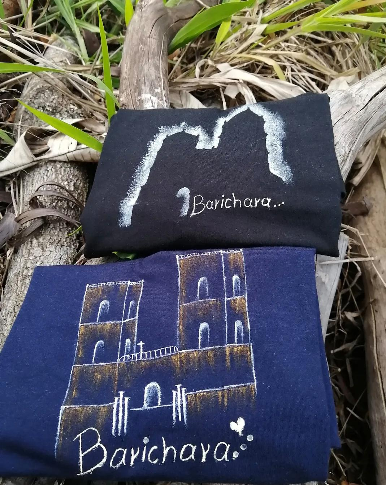
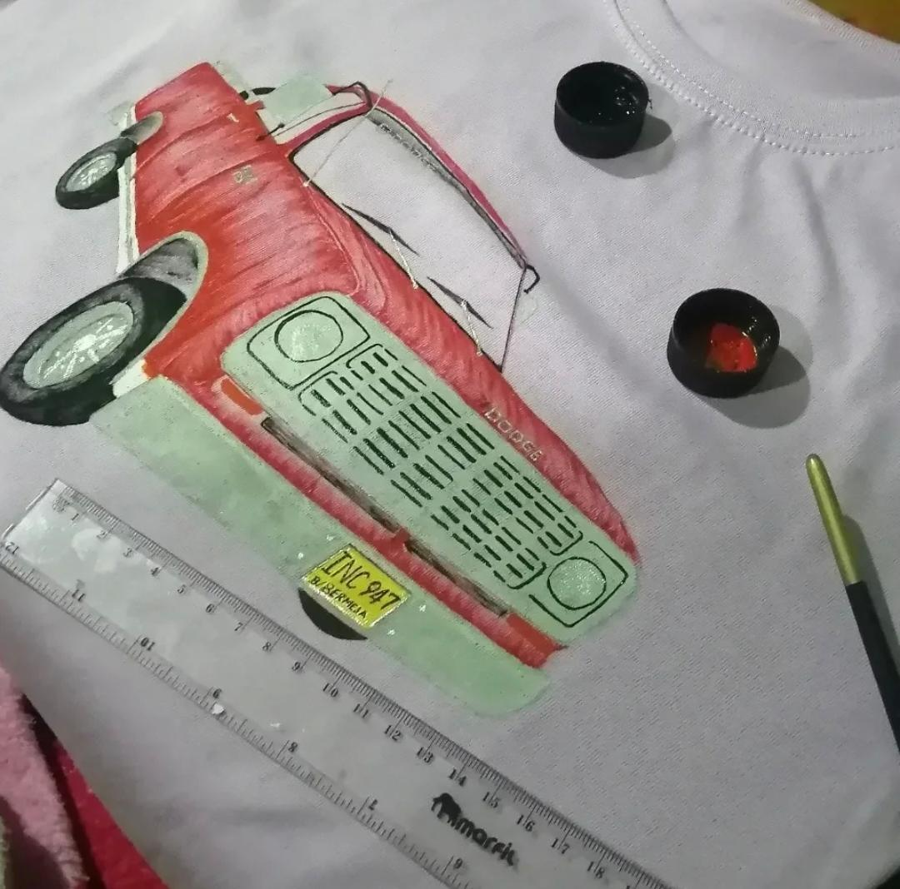
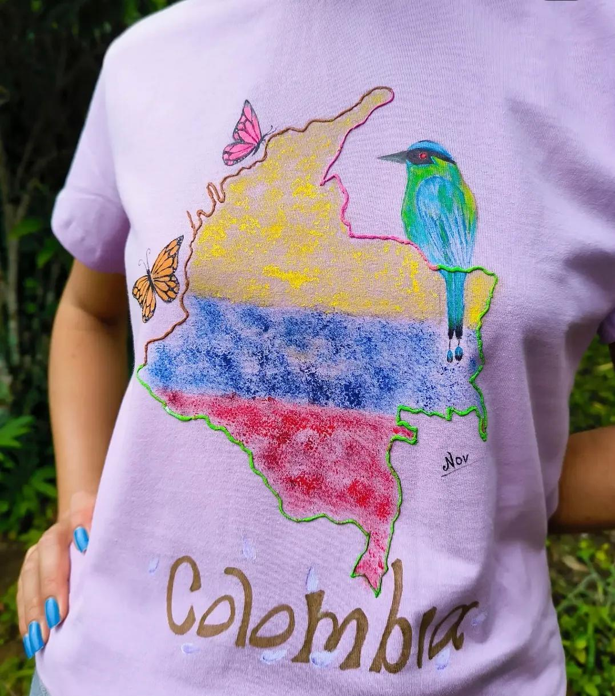
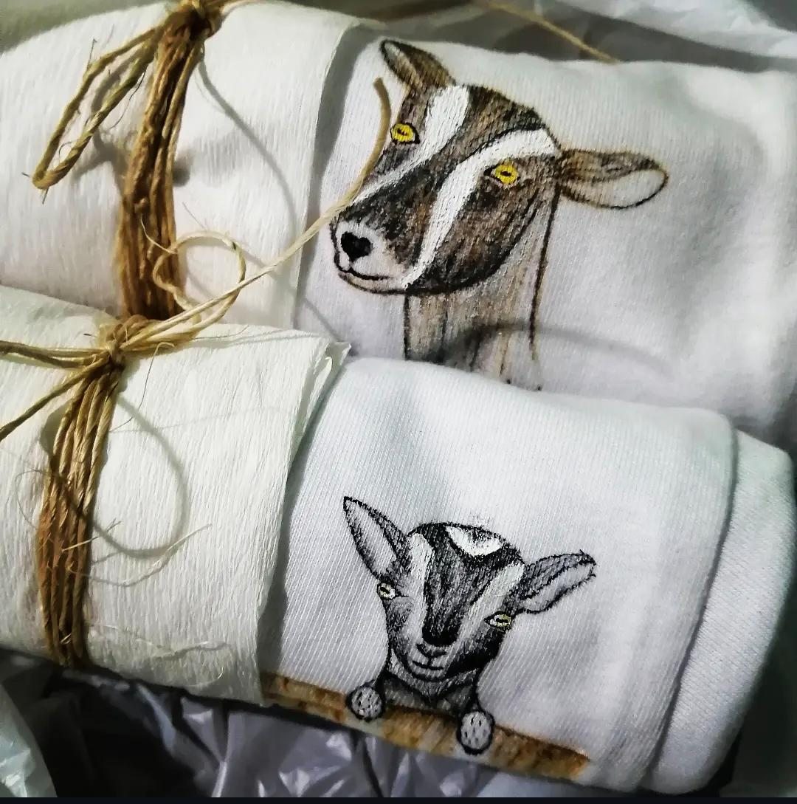
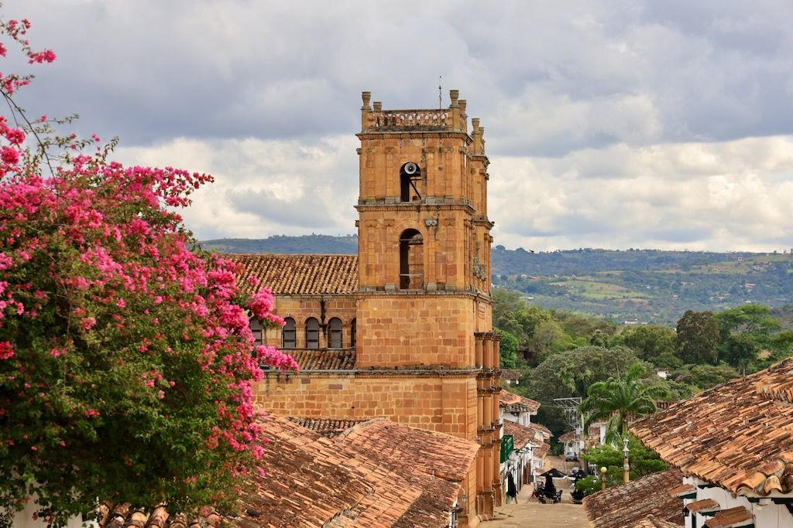

Pieza artesanalFachadas con alma
Inspirada en la Iglesia de Barichara
HECHO A MANO, HECHO CON AMOR
Llevamos la belleza de nuestras calles, fachadas y recuerdos a prendas pintadas a mano. Cada pieza cuenta una historia.
Descubre la colección ↗Piezas únicas · Arte colombiano · Pintado a mano

Una historia que puedes vestir.
NUESTRAS CREACIONES
Cada pincelada transforma una prenda en algo especial. Descubre piezas creadas para llevar el arte contigo.

Pieza artesanalInspirada en la Iglesia de Barichara

Pintado a manoArte en cada trazo

Edición especialUn pedacito de nuestra tierra

DE BARICHARA PARA EL MUNDO
Las fachadas, las puertas antiguas, las calles de piedra y los colores de Barichara guardan historias que merecen ser contadas.
En PintAmano convertimos esa inspiración en prendas intervenidas con dedicación, creatividad y amor por lo nuestro.
Conoce nuestra esencia →No es solo una prenda.
Es un pedacito de historia
que llevas contigo.
MÁS QUE PINTURA
PintAmano nace del amor por el arte y por los detalles que hacen especial a nuestra tierra. Queremos que cada prenda sea diferente, auténtica y llena de significado.
Cada diseño tiene su propia personalidad.
El valor de crear con paciencia y dedicación.
Inspiración en los colores y rincones de Colombia.
¿LISTA PARA LLEVAR ARTE?
Escríbenos y descubre nuestras creaciones.